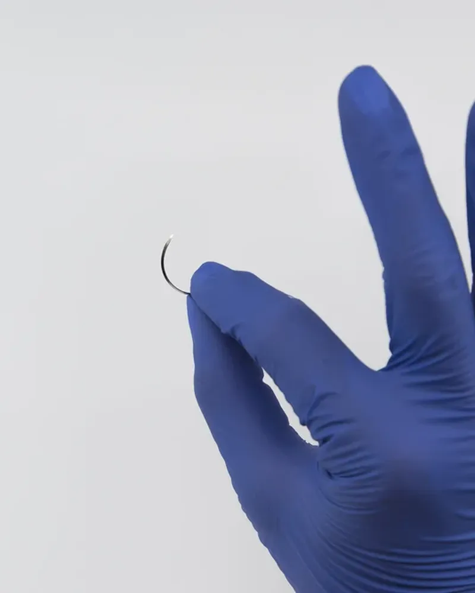

Agujas para cirugía de alta especialidad
Siliconadas
Indicaciones. Agujas para cirugía cardiovascular, oftálmica y plástica, estética y reconstructiva.
CardiovascularOftálmicaPlástica y reconstructiva
Distribuidor autorizado en Panamá
La calidad y la tecnología de las agujas Atramat® son la punta de su proceso de innovación. Se fabrican con tecnología alemana y están siliconadas para pasar con suavidad por los tejidos.
Combinan curvatura, longitud y punta para cada procedimiento de alta especialidad.

Siliconadas
Indicaciones. Agujas para cirugía cardiovascular, oftálmica y plástica, estética y reconstructiva.
Geometría de la aguja
Indicaciones. Cada aguja se describe por su punta, cuerpo, diámetro de ensamble, longitud y curvatura.
* Para más información, consulta las instrucciones de uso del producto.